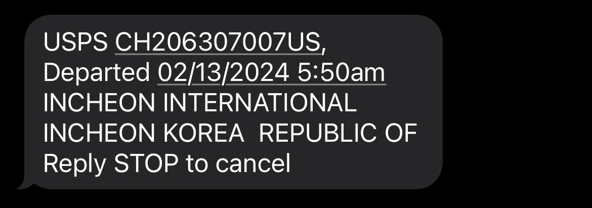

Feb 14th, 2024
안녕 ㅎㅎ
왜인지 모르겠는데 양배추 먹는 누나 생각하면 웃음이 저절로 나와 ㅋㅋ
진짜 토끼처럼 귀엽고 소중해서 그런가? ㅎㅎ
나 이제 이런 말 술술 나온다.. 그래도 항상 진심이야~ ㅎㅎ
누나를 만나고 행복해. 진짜로. 그냥 생각하면 마음이 따뜻해져.
옆에 없어도 항상 같이 있는 느낌이야.
내가 왜 이리 확실하게 누나를 좋아하는지 누나가 신기해 했잖아 ㅎㅎ
설명하자면 너무 길어질거 같아서 다른 글에 썼어.
이 편지 다 읽고 여기를 누르고 한번 가봐.
나 정말로 누나한테 좋은 남자친구가 되고 싶어. 누나 앞을 막지 않고 누나한테 부담 주고 그런 사람이 아니라, 편안하고 누나가 행복해 할 수 있는 사람.
내가 그런 사람이 되기를 많이 기도할게 ㅎㅎ
아 그리고.. 나 생각보다 눈치 없어. 진짜로.. ㅎㅎ 눈치 있는거 같아 보여도 바보같고 많이 허당끼가 있어 ㅋㅋㅋ 알려주고 싶었어... 알고 있겠지만.. ㅎㅎㅎ
공부 때문에 많이 요즘에 피곤하고 삶이 지루하고 그럴거 같아.
요번주 주일 설교 내용이 많이 생각이나. 이건 누나도 벌써 알고 있을거야 - '지금 우리는 모르더라도, 하나님은 우리한테 prepare한 엄청난 플렌이 있으시다.'
지금 많이 공부하면서 바쁘고, 모르는게 나올때마다 불안할수있고... 힘들지.
내가 그 상황에 있다고 생각하면 많이 힘들어 했을거 같아.
그래도 나는 믿어 - 이 모든 과정이 하나님께서 누나를 이 세상에서 더욱더 크게 사용하시려고 준비시키고 있으시다고. 하나님은 지금 누나랑 함께 걷고 계서.
하나님이 누나한테 주신 이 시간이랑 비젼, 지금처럼 최선을 다해서 믿음으로 끝가지 가보자. 비록 미국에 있지만 나도 옆에서 같이 갈게.
언제든지 고민을 들어줄 사람이 필요하면 얘기하고. I am here for you and for you only.
편지 쓰고 싶을때마다 쓸려고 이 사이트를 한번 만들어 봤어. 큰건 아니니깐 그냥 부담없이 쉬고 싶을때마다 들어와서 쉬고 가.
항상 응원하고.
옆에 나무처럼 있을게.
보고싶다.
오늘 하루 잘 보내.
해피 발렌타인 데이 :)
- 겸이가

(사진.. 안 웃고 있지만.. 행복한 모습이야.. ㅎㅎㅎ)
ps.
To be continued...
